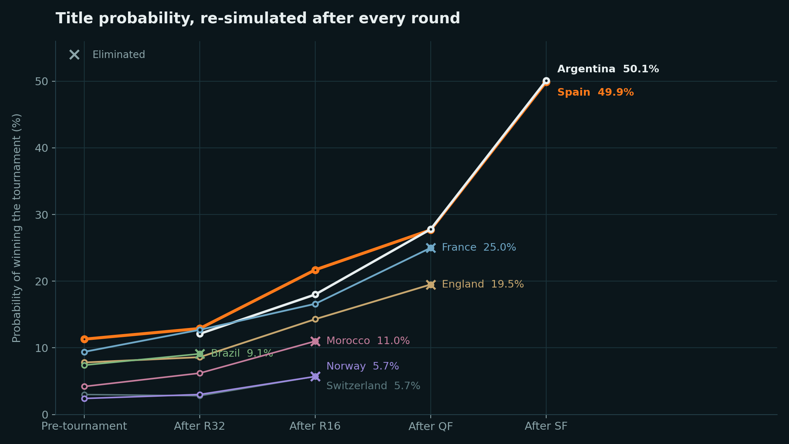
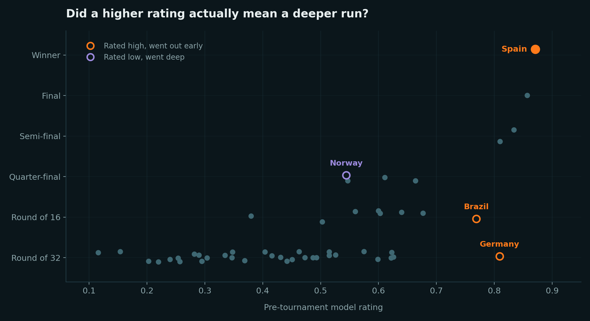

Predictive modelling · published live during the tournament
A Monte Carlo simulator that played the tournament out 10,000 times, re-ran after every round, and posted its numbers in public while the result was still unknown. That means the whole thing can be marked afterwards — so this page does that, including the parts it got wrong.
Pre-tournament output, published before the group stage. Spain came out as favourites — and went on to win it.
How it works
Every team carries a composite strength score built from four inputs, weighted by how much each has historically explained tournament results: expected-goals differential at 40%, squad market value at 35% and recent tournament form at 25%, with real penalty-shootout records resolving knockout ties instead of a coin flip.
That score sets each side's expected goals for a given fixture, which gives a probability for every plausible scoreline. The simulator then plays the tournament forward 10,000 times — drawing a result for each match, resolving group tables and tiebreakers, carrying winners through the bracket. Counting how often each of the 48 teams survives to each stage gives the published probabilities. After every matchday I swap the real results in for the simulated ones and re-run the whole thing.
Before publishing anything I backtested the same model over the 2022 tournament. It returned Argentina as the most likely winner, which was enough to convince me it was worth running live.
xG differential, squad value, tournament form, penalty records.
Weighted composite strength score per team.
Strength gap → expected goals → scoreline probabilities.
Groups, tiebreakers and knockouts played to a winner.
Stage-by-stage probabilities, refreshed each matchday.
Live updating
After every completed round I swapped the real results in for the simulated ones and re-ran all 10,000 simulations on the teams still standing. That is the part I find most interesting to look back on: not the single pre-tournament number, but the shape of how confidence built.
Spain never lost top spot, but their lead was slim for a long time — 11.3% before kick-off, still only 12.9% after the Round of 32, and level with Argentina and France going into the Round of 16. It was the quarter-finals before the field genuinely thinned, and by the semis it was a coin flip between two teams the model had rated first and second all along.

Crosses mark elimination. Brazil went out at the Round of 16 rated fourth, which is the sharpest single drop on the chart.
Marking the model
Every prediction here was timestamped in public before the matches, so there is no room to reinterpret it afterwards. Here is the scorecard.

Each dot is one of the 48 teams. The broad upward trend is the model working; the three labelled dots are where it did not.
It called the winner. Spain were rated first pre-tournament at 10.2% and won it. More convincing than the headline pick, though, is that all four semi-finalists came from the model's top six — Spain first, Argentina second, France third and England sixth. Getting one favourite right can be luck. Getting the whole final four from six names is the ratings doing real work.
Germany and Brazil. Rated fifth and sixth on raw strength, both went out far earlier than the model expected — Germany at the Round of 32, Brazil at the Round of 16. Those are the two genuine failures, and they are the clearest argument for the limitation below: neither squad news nor form on the day gets anywhere near this model.
Norway to the quarter-finals from a pre-tournament rank of 19th. Not a failure exactly — someone unexpected always goes deep — but it is the run the model had least support for.
Brier score of 0.846 on the championship outcome, against roughly 0.98 for a model that guesses at random. That is a real improvement but a modest-looking number, and the reason is worth stating: with 48 possible winners, even a well-calibrated forecast gives its favourite only about a one-in-ten chance, so the score stays high no matter how good the model is. It is most useful as a baseline to beat next time, not as a headline.
Squad market value is a noisy proxy for quality, tournament form is a small sample, there is no injury or squad-selection input, and no home-advantage term for the three host nations.
A home-advantage term for the hosts, an availability and injury input, and scoring the model against bookmaker odds rather than a random baseline — which is the only comparison that really tests whether four weighted signals beat the market.
Built with
All output ran from the terminal rather than a hosted dashboard — the tables and charts on this page are pulled directly from those runs.